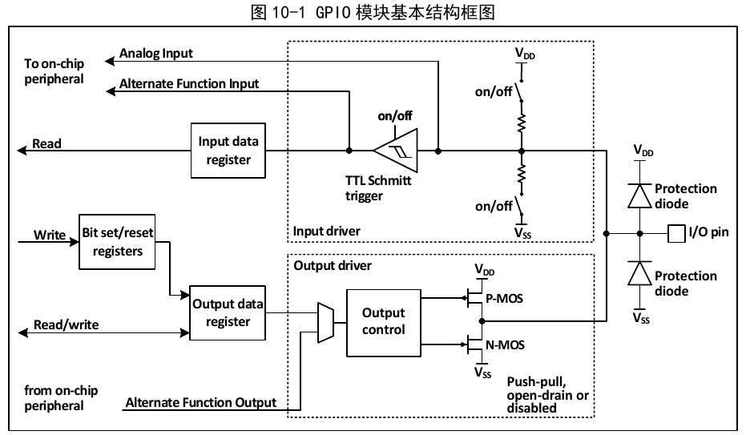
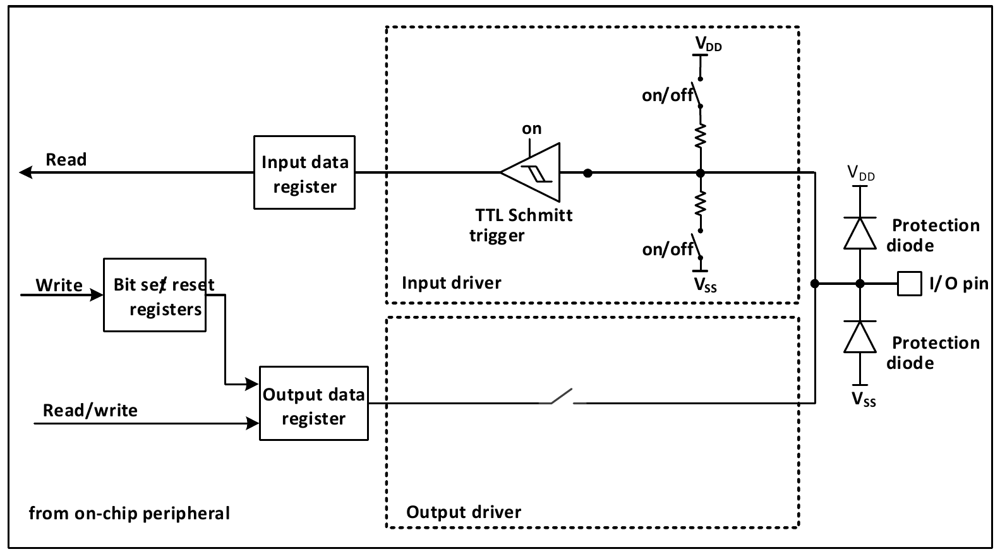
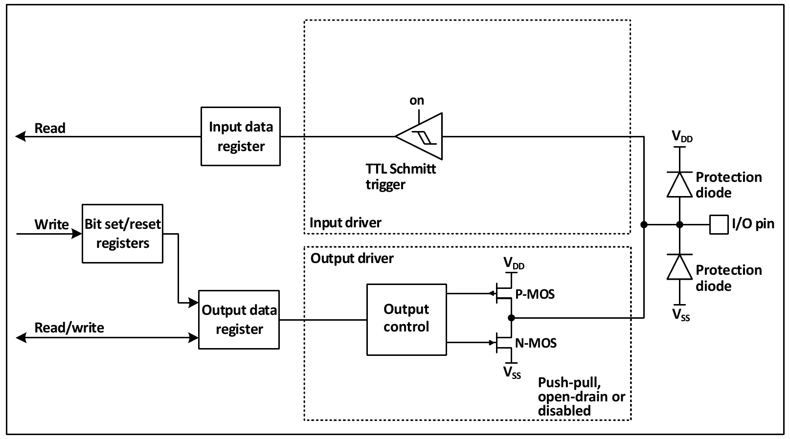
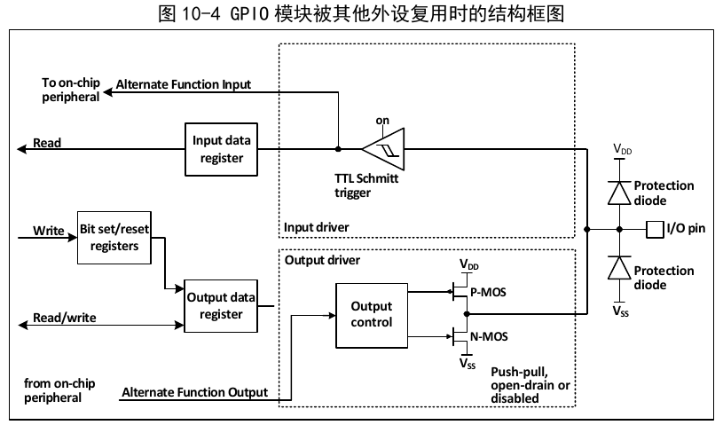
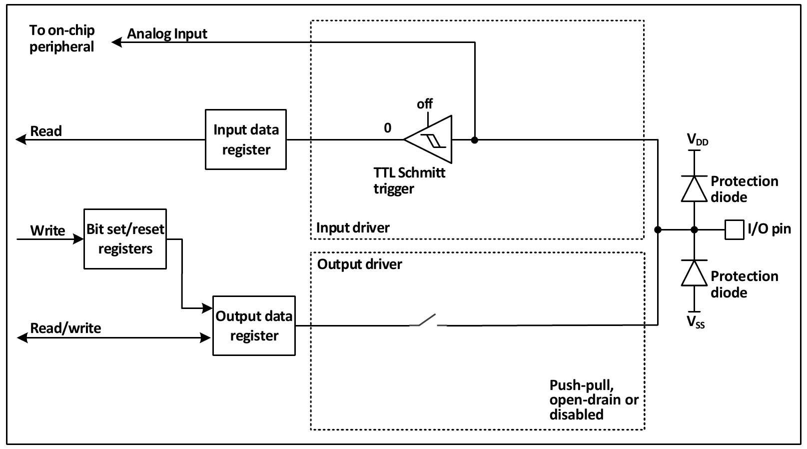

GPIO ports can be configured into various input or output modes, with built-in, disableable pull-up or pull-down resistors, and can be configured for push-pull or open-drain operation. GPIO ports can also be multiplexed to other functions.
Each pin of a port can be configured into one of the following modes:
Many pins have alternate functions; many other peripherals map their output and input channels onto these pins. The specific usage of these multiplexed pins should be referred to in each peripheral's documentation, while whether these pins are multiplexed or remapped is described in this chapter.

As shown in the IO port structure in Figure 10-1, each pin has two protection diodes inside the chip, and the IO port is internally divided into input and output driver modules. The input driver has optional weak pull-up/pull-down resistors and can be connected to analog input peripherals such as AD. If the input goes to a digital peripheral, it must pass through a TTL Schmitt trigger before being connected to the GPIO input data register or other alternate function peripherals. The output driver has a pair of MOS transistors; by configuring whether the upper and lower MOS transistors are enabled, the IO port can be configured as open-drain or push-pull output. The output driver can also be configured to be controlled by GPIO output or by another multiplexed peripheral.
Immediately after reset, the GPIO port runs in its initial state. At this point, most IO ports are in floating input mode, but some peripheral-related pins such as HSE run in their peripheral alternate function mode. For specific initialization functions, please refer to the pin description related chapters.
All GPIO ports can be configured as external interrupt input channels, but one external interrupt input channel can be mapped to at most one GPIO pin, and the external interrupt channel number must match the GPIO port bit number. For example, PA1 (or PB1, PC1, PD1, PE1, etc.) can only be mapped to EXTI1, and EXTI1 can only accept one of PA1, PB1, PC1, PD1, or PE1 — the mapping is one-to-one in both directions.
When using alternate functions, note the following:
The same IO port may have multiple peripherals multiplexed onto it. To give each peripheral maximum flexibility, the alternate function pins — in addition to the default alternate function pins — can be remapped to other pins to avoid occupied pins.
The lock mechanism can lock the IO port configuration. After a specific write sequence, the selected IO pin configuration is locked and cannot be changed until the next reset.

When the IO port is configured as input mode, the output driver is disconnected, the input pull-up/pull-down is optional, and the alternate function and analog input are not connected. The data on each IO port is sampled into the input data register at each PB2 clock; reading the corresponding bit of the input data register obtains the logic level of the corresponding pin.

When the IO port is configured as output mode, the pair of MOS transistors in the output driver can be configured as push-pull or open-drain mode as needed, without using the alternate function. The input driver's pull-up/pull-down resistors are disabled, and the TTL Schmitt trigger is activated. The level appearing on the IO pin will be sampled into the input data register at each PB2 clock, so reading the input data register will return the IO status. In push-pull output mode, accessing the output data register will return the last written value.

When the alternate function is enabled, the output driver is enabled and can be configured as open-drain or push-pull mode as needed. The Schmitt trigger is also turned on, and the alternate function input and output lines are connected, but the output data register is disconnected. The level appearing on the IO pin will be sampled into the input data register at each PB2 clock. In open-drain mode, reading the input data register will return the current IO port status; in push-pull mode, reading the output data register will return the last written value.

When analog input is enabled, the output buffer is disconnected, the Schmitt trigger input of the input driver is disabled to prevent current consumption on the IO port, the pull-up/pull-down resistors are disabled, and reading the input data register will always return 0.
The following tables recommend the GPIO port configuration for the pins of each peripheral.
| TIM1/8 | Configuration | GPIO Configuration |
|---|---|---|
| TIM1/8_CHx | Input capture channel x | Floating input |
| Output compare channel x | Push-pull alternate output | |
| TIM1/8_CHxN | Complementary output channel x | Push-pull alternate output |
| TIM1/8_BKIN | Break input | Floating input |
| TIM1/8_ETR | External trigger clock input | Floating input |
| TIM2/3/4/5 Pin | Configuration | GPIO Configuration |
|---|---|---|
| TIM2/3/4/5_CHx | Input capture channel x | Floating input |
| Output compare channel x | Push-pull alternate output | |
| TIM2/3/4_ETR | External trigger clock input | Floating input |
| USART Pin | Configuration | GPIO Configuration |
|---|---|---|
| USARTx_TX | Full-duplex mode | Push-pull alternate output |
| Half-duplex synchronous mode | Open-drain alternate output | |
| USARTx_RX | Full-duplex mode | Floating input or pull-up input |
| Half-duplex synchronous mode | Not used | |
| USARTx_CK | Synchronous mode | Push-pull alternate output |
| USARTx_RTS | Hardware flow control | Push-pull alternate output |
| USARTx_CTS | Hardware flow control | Floating input or pull-up input |
| SPI Pin | Configuration | GPIO Configuration |
|---|---|---|
| SPIx_SCK | Master mode | Push-pull alternate output |
| Slave mode | Floating input | |
| SPIx_MOSI | Full-duplex master mode | Push-pull alternate output |
| Full-duplex slave mode | Floating input or pull-up input | |
| SPIx_MOSI | Simple bidirectional data line / master mode | Push-pull alternate output |
| SPIx_MOSI | Simple bidirectional data line / slave mode | Not used |
| SPIx_MISO | Full-duplex master mode | Floating input or pull-up input |
| Full-duplex slave mode | Push-pull alternate output | |
| SPIx_MISO | Simple bidirectional data line / master mode | Not used |
| SPIx_MISO | Simple bidirectional data line / slave mode | Push-pull alternate output |
| SPIx_NSS | Hardware master or slave mode | Floating, pull-up, or pull-down input |
| Hardware master mode / NSS output enable | Push-pull alternate output | |
| Software mode | Not used |
| I2S Pin | Configuration | GPIO Configuration |
|---|---|---|
| I2Sx_WS | Master mode | Push-pull alternate output |
| Slave mode | Floating input | |
| I2Sx_CK | Master mode | Push-pull alternate output |
| Slave mode | Floating input | |
| I2Sx_SD | Transmitter | Push-pull alternate output |
| Receiver | Floating, pull-up, or pull-down input | |
| I2Sx_MCK | Master mode | Push-pull alternate output |
| Slave mode | Not used |
| I2C Pin | Configuration | GPIO Configuration |
|---|---|---|
| I2C_SCL | I2C clock | Open-drain alternate output |
| I2C_SDA | I2C data | Open-drain alternate output |
| I3C Pin | Configuration | GPIO Configuration |
|---|---|---|
| I3C_SCL | I3C clock | Push-pull alternate output |
| I3C_SDA | I3C data | Push-pull alternate output |
| CAN Pin | GPIO Configuration |
|---|---|
| CAN1_TX | Push-pull alternate output |
| CAN1_RX | Floating input or pull-up input |
| DVP Pin | Configuration | GPIO Configuration |
|---|---|---|
| PCLK | Pixel clock input | Floating input or pull-up input |
| DATA[11:0] | Pixel data input | Floating input or pull-up input |
| VSYNC | Frame sync signal input | Floating input or pull-up input |
| HSYNC | Line sync signal input | Floating input or pull-up input |
| LTDC Pin | Configuration | GPIO Configuration |
|---|---|---|
| LCD_CLK | Clock output | Alternate push-pull output |
| LCD_VSYNC | Vertical sync output | Alternate push-pull output |
| LCD_HSYNC | Horizontal sync output | Alternate push-pull output |
| LCD_DE | Data enable output | Alternate push-pull output |
| LCD_R[7:0] | Data: 8-bit red data output | Alternate push-pull output |
| LCD_G[7:0] | Data: 8-bit green data output | Alternate push-pull output |
| LCD_B[7:0] | Data: 8-bit blue data output | Alternate push-pull output |
| SDIO Pin | Configuration | GPIO Configuration |
|---|---|---|
| SDIO_CK | Clock | Push-pull alternate output |
| SDIO_CMD | Command | Push-pull alternate output |
| SDIO[D7:D0] | Data | Push-pull alternate output |
| FSMC Pin | GPIO Configuration |
|---|---|
| FSMC_A[23:16] | Push-pull alternate output |
| FSMC_D[15:0] | Push-pull alternate output |
| FSMC_CK | Push-pull alternate output |
| FSMC_NOE | Push-pull alternate output |
| FSMC_NWE | Push-pull alternate output |
| FSMC_NE1 | Push-pull alternate output |
| FSMC_NCE2 | Push-pull alternate output |
| FSMC_NWAIT | Floating input or pull-up input |
| FSMC_NBL[1:0] | Push-pull alternate output |
| ADC/DAC Pin | GPIO Configuration |
|---|---|
| ADC/DAC | Analog input |
| Pin | Function | GPIO Configuration |
|---|---|---|
| TAMPER_RTC | RTC output | Hardware auto-configured |
| Tamper event input | Hardware auto-configured | |
| MCO | Clock output | Push-pull alternate output |
| EXTI | External interrupt input | Floating, pull-up, or pull-down input |
When LSEON=0, the LSE oscillator pins OSC32_IN/OSC32_OUT can be used as GPIO PC14/PC15, respectively. When LSEON=1, they serve as LSE pins.
OSC_IN/OSC_OUT can be used as GPIO PD0/PD1, configured via remap register 1 (AFIO_PCFR1).
| AF | TIM1_RM=00 Default | TIM1_RM=01 Partial | TIM1_RM=11 Full |
|---|---|---|---|
| TIM1_ETR | PA12 | PA12 | PE7 |
| TIM1_CH1 | PA8 | PA8 | PE9 |
| TIM1_CH2 | PA9 | PA9 | PE11 |
| TIM1_CH3 | PA10 | PA10 | PB8 |
| TIM1_CH4 | PA11 | PA11 | PA7 |
| TIM1_BKIN | PB12 | PA6 | PB10 |
| TIM1_CH1N | PB13 | PA7 | PE8 |
| TIM1_CH2N | PB14 | PB0 | PE10 |
| TIM1_CH3N | PB15 | PB1 | PE12 |
| AF | TIM2_RM=00 Default | TIM2_RM=01 Partial | TIM2_RM=10 Partial | TIM2_RM=11 Full |
|---|---|---|---|---|
| TIM2_ETR | PA0 | PA15 | PA0 | PA15 |
| TIM2_CH1 | PA0 | PA15 | PA0 | PA15 |
| TIM2_CH2 | PA1 | PB3 | PA1 | PB3 |
| TIM2_CH3 | PA2 | PA2 | PB10 | PB10 |
| TIM2_CH4 | PA3 | PA3 | PB11 | PB11 |
| AF | TIM3_RM=00 Default | TIM3_RM=10 Partial | TIM3_RM=11 Full |
|---|---|---|---|
| TIM3_ETR | PD2 | PD2 | PD2 |
| TIM3_CH1 | PA6 | PB4 | PC6 |
| TIM3_CH2 | PA7 | PB5 | PC7 |
| TIM3_CH3 | PB0 | PB0 | PC8 |
| TIM3_CH4 | PB1 | PB1 | PC9 |
| AF | TIM4_RM=0 Default | TIM4_RM=1 Remap |
|---|---|---|
| TIM4_ETR | PE0 | PE0 |
| TIM4_CH1 | PB6 | PD12 |
| TIM4_CH2 | PB7 | PD13 |
| TIM4_CH3 | PB8 | PD14 |
| TIM4_CH4 | PB9 | PD15 |
| AF | Default | ||
| TIM5_CH1 | PA0 | ||
| TIM5_CH2 | PA1 | ||
| TIM5_CH3 | PA2 | ||
| AF | TIM5CH4_RM=0 Default | TIM5CH4_RM=1 Remap |
|---|---|---|
| TIM5_CH4 | PA3 | LSI internal clock |
| AF | TIM8_RM=0 Default | TIM8_RM=1 Remap |
|---|---|---|
| TIM8_ETR | PA0 | PA0 |
| TIM8_CH1 | PC6 | PB6 |
| TIM8_CH2 | PC7 | PB7 |
| TIM8_CH3 | PC8 | PB8 |
| TIM8_CH4 | PC9 | PC13 |
| TIM8_BKIN | PA6 | PB9 |
| TIM8_CH1N | PA7 | PA13 |
| TIM8_CH2N | PB0 | PA14 |
| TIM8_CH3N | PB1 | PA15 |
| AF | USART1_RM1=0, USART1_RM=0 Default | USART1_RM1=0, USART1_RM=1 Remap | USART1_RM1=1, USART1_RM=0 Remap | USART1_RM1=1, USART1_RM=1 Remap |
|---|---|---|---|---|
| USART1_CK | PA8 | PA8 | PA10 | PA5 |
| USART1_TX | PA9 | PB6 | PB15 | PA6 |
| USART1_RX | PA10 | PB7 | PA8 | PA7 |
| USART1_CTS | PA11 | PA11 | PA5 | PC4 |
| USART1_RTS | PA12 | PA12 | PA9 | PC5 |
| AF | USART2_RM=0 Default | USART2_RM=1 Remap |
|---|---|---|
| USART2_CTS | PA0 | PD3 |
| USART2_RTS | PA1 | PD4 |
| USART2_TX | PA2 | PD5 |
| USART2_RX | PA3 | PD6 |
| USART2_CK | PA4 | PD7 |
| AF | USART3_RM=00 Default | USART3_RM=01 Partial | USART3_RM=10 Partial | USART3_RM=11 Full |
|---|---|---|---|---|
| USART3_TX | PB10 | PC10 | PA13 | PD8 |
| USART3_RX | PB11 | PC11 | PA14 | PD9 |
| USART3_CK | PB12 | PC12 | PD10 | PD10 |
| USART3_CTS | PB13 | PB13 | PD11 | PD11 |
| USART3_RTS | PB14 | PB14 | PD12 | PD12 |
| AF | USART4_RM=00 Default | USART4_RM=01 Remap | USART4_RM=1x Remap |
|---|---|---|---|
| USART4_TX | PC10 | PB0 | PE0 |
| USART4_RX | PC11 | PB1 | PE1 |
| USART4_CK | PC12 | PB2 | PE12 |
| USART4_CTS | PA13 | PC4 | PB8 |
| USART4_RTS | PD2 | PC5 | PB9 |
| AF | USART5_RM=00 Default | USART5_RM=01 Remap | USART5_RM=1x Remap |
|---|---|---|---|
| USART5_TX | PC12 | PB4 | PE8 |
| USART5_RX | PD2 | PB5 | PE9 |
| USART5_CK | PB5 | PB3 | PB2 |
| USART5_CTS | PB3 | PB8 | PB0 |
| USART5_RTS | PB4 | PB9 | PB1 |
| AF | USART6_RM=00 Default | USART6_RM=01 Remap | USART6_RM=10 Remap | USART6_RM=11 Remap |
|---|---|---|---|---|
| USART6_TX | PC0 | PB8 | PE10 | PC0 |
| USART6_RX | PC1 | PB9 | PE11 | PC1 |
| USART6_CK | PB0 | PB5 | PA13 | PA5 |
| USART6_CTS | PC2 | PE0 | PA14 | PC2 |
| USART6_RTS | PC3 | PE1 | PA15 | PC3 |
| AF | USART7_RM=00 Default | USART7_RM=01 Remap | USART7_RM=10 Remap | USART7_RM=11 Remap |
|---|---|---|---|---|
| USART7_TX | PC2 | PA6 | PA9 | PA9 |
| USART7_RX | PC3 | PA7 | PA10 | PA10 |
| USART7_CK | PC1 | PB0 | PA8 | PA8 |
| USART7_CTS | PC4 | PC4 | PB6 | PC8 |
| USART7_RTS | PC5 | PC5 | PB7 | PC9 |
| AF | USART8_RM=00 Default | USART8_RM=01 Remap | USART8_RM=1x Remap |
|---|---|---|---|
| USART8_TX | PC4 | PA14 | PB15 |
| USART8_RX | PC5 | PA15 | PB14 |
| USART8_CK | PA7 | PB15 | PB11 |
| USART8_CTS | PB0 | PE10 | PB13 |
| USART8_RTS | PB1 | PE11 | PB12 |
| AF | USART9_RM=00 Default | USART9_RM=01 Remap | USART9_RM=1x Remap |
|---|---|---|---|
| USART9_TX | PB1 | PA4 | PE3 |
| USART9_RX | PB2 | PA5 | PE4 |
| USART9_CK | PD8 | PD8 | PE2 |
| USART9_CTS | PE8 | PE8 | PE5 |
| USART9_RTS | PE9 | PE9 | PE6 |
| AF | USART10_RM=00 Default | USART10_RM=01 Remap | USART10_RM=1x Remap |
|---|---|---|---|
| USART10_TX | PE0 | PB8 | PD11 |
| USART10_RX | PE1 | PB9 | PD12 |
| USART10_CK | PE12 | PE12 | PD10 |
| USART10_CTS | PC14 | PC14 | PD13 |
| USART10_RTS | PC15 | PC15 | PD14 |
| AF | SPI1_RM=0 Default | SPI1_RM=1 Remap |
|---|---|---|
| SPI1_NSS | PA4 | PA15 |
| SPI1_SCK | PA5 | PB3 |
| SPI1_MISO | PA6 | PB4 |
| SPI1_MOSI | PA7 | PB5 |
| AF | SPI3_RM=0 Default | SPI3_RM=1 Remap |
|---|---|---|
| SPI3_NSS | PA15 | PA4 |
| SPI3_SCK | PB3 | PC10 |
| SPI3_MISO | PB4 | PC11 |
| SPI3_MOSI | PB5 | PC12 |
| AF | SPI3_RM=0 Default | SPI3_RM=1 Remap |
|---|---|---|
| I2S3_WS | PA15 | PA4 |
| I2S3_CK | PB3 | PC10 |
| I2S3_MCK | PC7 | PC7 |
| I2S3_SD | PB5 | PC12 |
| AF | I2C_RM=0 Default | I2C_RM=1 Remap |
|---|---|---|
| I2C_SCL | PB6 | PB8 |
| I2C_SDA | PB7 | PB9 |
| AF | CAN1_RM=00 Default | CAN1_RM=10 Remap | CAN1_RM=11 Remap |
|---|---|---|---|
| CAN1_RX | PA11 | PB8 | PD0 |
| CAN1_TX | PA12 | PB9 | PD1 |
| AF | ADC1_ETRGINJ_RM=0 Default | ADC1_ETRGINJ_RM=1 Remap |
|---|---|---|
| ADC1 external trigger injected conversion | ADC1 external trigger injected conversion connected to EXTI15 | ADC1 external trigger injected conversion connected to TIM8_CH4 |
| AF | ADC1_ETRGREG_RM=0 Default | ADC1_ETRGREG_RM=1 Remap |
|---|---|---|
| ADC1 external trigger regular conversion | ADC1 external trigger regular conversion connected to EXTI11 | ADC1 external trigger regular conversion connected to TIM8_TRGO |
| AF | ADC2_ETRGINJ_RM=0 Default | ADC2_ETRGINJ_RM=1 Remap |
|---|---|---|
| ADC2 external trigger injected conversion | ADC2 external trigger injected conversion connected to EXTI15 | ADC2 external trigger injected conversion connected to TIM8_CH4 |
| AF | ADC2_ETRGREG_RM=0 Default | ADC2_ETRGREG_RM=1 Remap |
|---|---|---|
| ADC2 external trigger regular conversion | ADC2 external trigger regular conversion connected to EXTI11 | ADC2 external trigger regular conversion connected to TIM8_TRGO |
| AF | FSMCEN=0 Default | FSMCEN=1 Remap |
|---|---|---|
| NBL[0] | PE0 | PE0 |
| NBL[1] | PE1 | PE1 |
| CLK | PD3 | PD3 |
| NOE | PD4 | PD4 |
| NWE | PD5 | PD5 |
| NWAIT | PD6 | PD6 |
| NE1/NCE2 | PD7 | PD7 |
| NADV | PB7 | PB7 |
| A16 | PD11 | PD11 |
| A17 | PD12 | PD12 |
| A18 | PD13 | PD13 |
| A19 | PE3 | PE3 |
| A20 | PE4 | PE4 |
| A21 | PE5 | PE5 |
| A22 | PE6 | PE6 |
| A23 | PE2 | PE2 |
| D0 | PD14 | PD14 |
| D1 | PD15 | PD15 |
| D2 | PD0 | PD0 |
| D3 | PD1 | PD1 |
| D4 | PE7 | PC4 |
| D5 | PE8 | PE8 |
| D6 | PE9 | PE9 |
| D7 | PE10 | PE10 |
| D8 | PE11 | PE11 |
| D9 | PB11 | PB11 |
| D10 | PB12 | PB12 |
| D11 | PB13 | PB13 |
| D12 | PB14 | PB14 |
| D13 | PD8 | PD8 |
| D14 | PD9 | PD9 |
| D15 | PD10 | PD10 |
| AF | FSMCEN=1 Default | FSMCEN=1 & USBHS2EN=1 & RB_UD_RST_SIE=0 |
|---|---|---|
| FSMC_NADV | PB7 | PD2 |
| AF | DVPEN=1, DVP_RM=0 Default | DVPEN=1 & USBHS1EN=1 & RB_UD_RST_SIE=0 | DVP_RM=1 Remap |
|---|---|---|---|
| PCLK | PA6 | PA6 | PA6 |
| HSYNC | PA4 | PA4 | PA4 |
| VSYNC | PA5 | PA5 | PA5 |
| D0 | PA9 | PA9 | PA9 |
| D1 | PA10 | PA10 | PA10 |
| D2 | PC8 | PC8 | PA8 |
| D3 | PC9 | PC9 | PB4 |
| D4 | PC11 | PC11 | PC11 |
| D5 | PB6 | PB3 | PB3 |
| D6 | PB8 | PB8 | PB8 |
| D7 | PB9 | PB9 | PB9 |
| D8 | PC10 | PC10 | PC10 |
| D9 | PC12 | PC12 | PC12 |
| D10 | PD6 | PD6 | PB5 |
| D11 | PD2 | PD2 | PD2 |
| AF | SDIO_RM=0 Default | SDIOEN=1 & ETHMACEN=1 | SDIO_RM=1 Remap |
|---|---|---|---|
| CK | PC12 | PC12 | PC12 |
| CMD | PD2 | PD2 | PD2 |
| SD0 | PC8 | PB14 | PB14 |
| SD1 | PC9 | PB15 | PB15 |
| SD2 | PC10 | PC10 | PC10 |
| SD3 | PC11 | PC11 | PC11 |
| SD4 | PB8 | PB8 | PB8 |
| SD5 | PB9 | PB9 | PB9 |
| SD6 | PC6 | PC6 | PA9 |
| SD7 | PC7 | PC7 | PA10 |
| AF | I3C_RM=0 Default | I3C_RM=1 Default |
|---|---|---|
| I3C_SCL | PB10 | PB4 |
| I3C_SDA | PB11 | PB5 |
| AF | LTDC_RM=0 Default | LTDC_RM=1 Remap |
|---|---|---|
| CLK | PE1 | PA10 |
| HSYNC | PB4 | PB8 |
| VSYNC | PB5 | PB9 |
| DE | PE0 | PA9 |
| R[0] | PC0 | PC0 |
| R[1] | PC1 | PC1 |
| R[2] | PC2 | PC2 |
| R[3] | PC3 | PC3 |
| R[4] | PA1 | PA1 |
| R[5] | PA2 | PA2 |
| R[6] | PA3 | PA3 |
| R[7] | PA7 | PA7 |
| G[0] | PC4 | PC4 |
| G[1] | PC5 | PC5 |
| G[2] | PB0 | PB0 |
| G[3] | PB1 | PB1 |
| G[4] | PB2 | PB3 |
| G[5] | PD8 | PA4 |
| G[6] | PB12 | PB12 |
| G[7] | PB13 | PB13 |
| B[0] | PB14 | PB14 |
| B[1] | PB15 | PB15 |
| B[2] | PB11 | PB11 |
| B[3] | PB10 | PB10 |
| B[4] | PA8 | PA8 |
| B[5] | PA13 | PA13 |
| B[6] | PA14 | PA14 |
| B[7] | PA15 | PA15 |
Unless otherwise specified, GPIO registers must be accessed as word operations (operating on these registers as 32-bit).
| Name | Address | Description | Reset Value |
|---|---|---|---|
| R32_GPIOA_CFGLR | 0x40010800 | PA port configuration register low | 0x44444444 |
| R32_GPIOB_CFGLR | 0x40010C00 | PB port configuration register low | 0x44444444 |
| R32_GPIOC_CFGLR | 0x40011000 | PC port configuration register low | 0x44444444 |
| R32_GPIOD_CFGLR | 0x40011400 | PD port configuration register low | 0x44444444 |
| R32_GPIOE_CFGLR | 0x40011800 | PE port configuration register low | 0x44444444 |
| R32_GPIOA_CFGHR | 0x40010804 | PA port configuration register high | 0x44444444 |
| R32_GPIOB_CFGHR | 0x40010C04 | PB port configuration register high | 0x44444444 |
| R32_GPIOC_CFGHR | 0x40011004 | PC port configuration register high | 0x44444444 |
| R32_GPIOD_CFGHR | 0x40011404 | PD port configuration register high | 0x44444444 |
| R32_GPIOE_CFGHR | 0x40011804 | PE port configuration register high | 0x44444444 |
| R32_GPIOA_INDR | 0x40010808 | PA port input data register | 0x0000XXXX |
| R32_GPIOB_INDR | 0x40010C08 | PB port input data register | 0x0000XXXX |
| R32_GPIOC_INDR | 0x40011008 | PC port input data register | 0x0000XXXX |
| R32_GPIOD_INDR | 0x40011408 | PD port input data register | 0x0000XXXX |
| R32_GPIOE_INDR | 0x40011808 | PE port input data register | 0x0000XXXX |
| R32_GPIOA_OUTDR | 0x4001080C | PA port output data register | 0x00000000 |
| R32_GPIOB_OUTDR | 0x40010C0C | PB port output data register | 0x00000000 |
| R32_GPIOC_OUTDR | 0x4001100C | PC port output data register | 0x00000000 |
| R32_GPIOD_OUTDR | 0x4001140C | PD port output data register | 0x00000000 |
| R32_GPIOE_OUTDR | 0x4001180C | PE port output data register | 0x00000000 |
| R32_GPIOA_BSHR | 0x40010810 | PA port bit set/reset register | 0x00000000 |
| R32_GPIOB_BSHR | 0x40010C10 | PB port bit set/reset register | 0x00000000 |
| R32_GPIOC_BSHR | 0x40011010 | PC port bit set/reset register | 0x00000000 |
| R32_GPIOD_BSHR | 0x40011410 | PD port bit set/reset register | 0x00000000 |
| R32_GPIOE_BSHR | 0x40011810 | PE port bit set/reset register | 0x00000000 |
| R32_GPIOA_BCR | 0x40010814 | PA port bit reset register | 0x00000000 |
| R32_GPIOB_BCR | 0x40010C14 | PB port bit reset register | 0x00000000 |
| R32_GPIOC_BCR | 0x40011014 | PC port bit reset register | 0x00000000 |
| R32_GPIOD_BCR | 0x40011414 | PD port bit reset register | 0x00000000 |
| R32_GPIOE_BCR | 0x40011814 | PE port bit reset register | 0x00000000 |
| R32_GPIOA_LCKR | 0x40010818 | PA port lock configuration register | 0x00000000 |
| R32_GPIOB_LCKR | 0x40010C18 | PB port lock configuration register | 0x00000000 |
| R32_GPIOC_LCKR | 0x40011018 | PC port lock configuration register | 0x00000000 |
| R32_GPIOD_LCKR | 0x40011418 | PD port lock configuration register | 0x00000000 |
| R32_GPIOE_LCKR | 0x40011818 | PE port lock configuration register | 0x00000000 |
Offset address: 0x00
| 31 | 30 | 29 | 28 | 27 | 26 | 25 | 24 | 23 | 22 | 21 | 20 | 19 | 18 | 17 | 16 |
|---|---|---|---|---|---|---|---|---|---|---|---|---|---|---|---|
| CNF7[1:0] | MODE7[1:0] | CNF6[1:0] | MODE6[1:0] | CNF5[1:0] | MODE5[1:0] | CNF4[1:0] | MODE4[1:0] | ||||||||
| 15 | 14 | 13 | 12 | 11 | 10 | 9 | 8 | 7 | 6 | 5 | 4 | 3 | 2 | 1 | 0 |
|---|---|---|---|---|---|---|---|---|---|---|---|---|---|---|---|
| CNF3[1:0] | MODE3[1:0] | CNF2[1:0] | MODE2[1:0] | CNF1[1:0] | MODE1[1:0] | CNF0[1:0] | MODE0[1:0] | ||||||||
| Bits | Name | Access | Description | Reset |
|---|---|---|---|---|
| [31:30] [27:26] [23:22] [19:18] [15:14] [11:10] [7:6] [3:2] |
CNFy[1:0] | RW | (y=0–7), port x configuration bits, used to configure the corresponding port. In input mode (MODE=00b): 00: Analog input mode; 01: Floating input mode; 10: Input with pull-up/pull-down. 11: Reserved. In output mode (MODE>00b): 00: General-purpose push-pull output mode; 01: General-purpose open-drain output mode; 10: Alternate function push-pull output mode; 11: Alternate function open-drain output mode. |
01b |
| [29:28] [25:24] [21:20] [17:16] [13:12] [9:8] [5:4] [1:0] |
MODEy[1:0] | RW | (y=0–7), port x mode selection bits, used to configure the corresponding port. 00: Input mode; 01: Output mode, max speed 10 MHz; 10: Output mode, max speed 2 MHz; 11: Output mode, max speed 50 MHz. |
00b |
Offset address: 0x04
| 31 | 30 | 29 | 28 | 27 | 26 | 25 | 24 | 23 | 22 | 21 | 20 | 19 | 18 | 17 | 16 |
|---|---|---|---|---|---|---|---|---|---|---|---|---|---|---|---|
| CNF15[1:0] | MODE15[1:0] | CNF14[1:0] | MODE14[1:0] | CNF13[1:0] | MODE13[1:0] | CNF12[1:0] | MODE12[1:0] | ||||||||
| 15 | 14 | 13 | 12 | 11 | 10 | 9 | 8 | 7 | 6 | 5 | 4 | 3 | 2 | 1 | 0 |
|---|---|---|---|---|---|---|---|---|---|---|---|---|---|---|---|
| CNF11[1:0] | MODE11[1:0] | CNF10[1:0] | MODE10[1:0] | CNF9[1:0] | MODE9[1:0] | CNF8[1:0] | MODE8[1:0] | ||||||||
| Bits | Name | Access | Description | Reset |
|---|---|---|---|---|
| [31:30] [27:26] [23:22] [19:18] [15:14] [11:10] [7:6] [3:2] |
CNFy[1:0] | RW | (y=8–15), port x configuration bits, used to configure the corresponding port. In input mode (MODE=00b): 00: Analog input mode; 01: Floating input mode; 10: Input with pull-up/pull-down. 11: Reserved. In output mode (MODE>00b): 00: General-purpose push-pull output mode; 01: General-purpose open-drain output mode; 10: Alternate function push-pull output mode; 11: Alternate function open-drain output mode. |
01b |
| [29:28] [25:24] [21:20] [17:16] [13:12] [9:8] [5:4] [1:0] |
MODEy[1:0] | RW | (y=8–15), port x mode bits, used to configure the corresponding port. 00: Input mode; 01: Output mode, max speed 10 MHz; 10: Output mode, max speed 2 MHz; 11: Output mode, max speed 50 MHz. |
00b |
Offset address: 0x08
| 31 | 30 | 29 | 28 | 27 | 26 | 25 | 24 | 23 | 22 | 21 | 20 | 19 | 18 | 17 | 16 |
|---|---|---|---|---|---|---|---|---|---|---|---|---|---|---|---|
| Reserved | |||||||||||||||
| 15 | 14 | 13 | 12 | 11 | 10 | 9 | 8 | 7 | 6 | 5 | 4 | 3 | 2 | 1 | 0 |
|---|---|---|---|---|---|---|---|---|---|---|---|---|---|---|---|
| IDR15 | IDR14 | IDR13 | IDR12 | IDR11 | IDR10 | IDR9 | IDR8 | IDR7 | IDR6 | IDR5 | IDR4 | IDR3 | IDR2 | IDR1 | IDR0 |
| Bits | Name | Access | Description | Reset |
|---|---|---|---|---|
| [31:16] | Reserved | RO | Reserved. | 0 |
| [15:0] | IDRy | RO | (y=0–15), port input data. These bits are read-only and can only be read as 16-bit values. The read value is the high/low state of the corresponding pin. | X |
Offset address: 0x0C
| 31 | 30 | 29 | 28 | 27 | 26 | 25 | 24 | 23 | 22 | 21 | 20 | 19 | 18 | 17 | 16 |
|---|---|---|---|---|---|---|---|---|---|---|---|---|---|---|---|
| Reserved | |||||||||||||||
| 15 | 14 | 13 | 12 | 11 | 10 | 9 | 8 | 7 | 6 | 5 | 4 | 3 | 2 | 1 | 0 |
|---|---|---|---|---|---|---|---|---|---|---|---|---|---|---|---|
| ODR15 | ODR14 | ODR13 | ODR12 | ODR11 | ODR10 | ODR9 | ODR8 | ODR7 | ODR6 | ODR5 | ODR4 | ODR3 | ODR2 | ODR1 | ODR0 |
| Bits | Name | Access | Description | Reset |
|---|---|---|---|---|
| [31:16] | Reserved | RO | Reserved. | 0 |
| [15:0] | ODRy | RW | For output mode: (y=0–15), port output data. This data can only be accessed as 16-bit. The IO port outputs the value of this register. For input mode with pull-up/pull-down: 1: Pull-up input; 0: Pull-down input. |
0 |
Offset address: 0x10
| 31 | 30 | 29 | 28 | 27 | 26 | 25 | 24 | 23 | 22 | 21 | 20 | 19 | 18 | 17 | 16 |
|---|---|---|---|---|---|---|---|---|---|---|---|---|---|---|---|
| BR15 | BR14 | BR13 | BR12 | BR11 | BR10 | BR9 | BR8 | BR7 | BR6 | BR5 | BR4 | BR3 | BR2 | BR1 | BR0 |
| 15 | 14 | 13 | 12 | 11 | 10 | 9 | 8 | 7 | 6 | 5 | 4 | 3 | 2 | 1 | 0 |
|---|---|---|---|---|---|---|---|---|---|---|---|---|---|---|---|
| BS15 | BS14 | BS13 | BS12 | BS11 | BS10 | BS9 | BS8 | BS7 | BS6 | BS5 | BS4 | BS3 | BS2 | BS1 | BS0 |
| Bits | Name | Access | Description | Reset |
|---|---|---|---|---|
| [31:16] | BRy | WO | (y=0–15), setting these bits clears the corresponding OUTDR bit; writing 0 has no effect. These bits can only be accessed as 16-bit. If both BR and BS bits are set simultaneously, the BS bit takes effect. | 0 |
| [15:0] | BSy | WO | (y=0–15), setting these bits sets the corresponding OUTDR bit; writing 0 has no effect. These bits can only be accessed as 16-bit. If both BR and BS bits are set simultaneously, the BS bit takes effect. | 0 |
Offset address: 0x14
| 31 | 30 | 29 | 28 | 27 | 26 | 25 | 24 | 23 | 22 | 21 | 20 | 19 | 18 | 17 | 16 |
|---|---|---|---|---|---|---|---|---|---|---|---|---|---|---|---|
| 15 | 14 | 13 | 12 | 11 | 10 | 9 | 8 | 7 | 6 | 5 | 4 | 3 | 2 | 1 | 0 |
|---|---|---|---|---|---|---|---|---|---|---|---|---|---|---|---|
| BR15 | BR14 | BR13 | BR12 | BR11 | BR10 | BR9 | BR8 | BR7 | BR6 | BR5 | BR4 | BR3 | BR2 | BR1 | BR0 |
| Bits | Name | Access | Description | Reset |
|---|---|---|---|---|
| [31:16] | Reserved | RO | Reserved. | 0 |
| [15:0] | BRy | WO | (y=0–15), setting these bits clears the corresponding OUTDR bit; writing 0 has no effect. These bits can only be accessed as 16-bit. | 0 |
Offset address: 0x18
| 31 | 30 | 29 | 28 | 27 | 26 | 25 | 24 | 23 | 22 | 21 | 20 | 19 | 18 | 17 | 16 |
|---|---|---|---|---|---|---|---|---|---|---|---|---|---|---|---|
| Reserved | LCKK | ||||||||||||||
| 15 | 14 | 13 | 12 | 11 | 10 | 9 | 8 | 7 | 6 | 5 | 4 | 3 | 2 | 1 | 0 |
|---|---|---|---|---|---|---|---|---|---|---|---|---|---|---|---|
| LCK15 | LCK14 | LCK13 | LCK12 | LCK11 | LCK10 | LCK9 | LCK8 | LCK7 | LCK6 | LCK5 | LCK4 | LCK3 | LCK2 | LCK1 | LCK0 |
| Bits | Name | Access | Description | Reset |
|---|---|---|---|---|
| [31:17] | Reserved | RO | Reserved. | 0 |
| 16 | LCKK | RW | Lock key. It can be written via a specific sequence to activate the lock, but can be read at any time. When read as 0, the lock is not active; when read as 1, the lock is active. The lock key write sequence is: write 1 – write 0 – write 1 – read 0 – read 1. The last step is not required but can be used to confirm the lock key has been activated. Any error during the write sequence will not activate the lock, and the LCK[15:0] value cannot be changed during the write sequence. Once the lock is active, the port configuration can only be changed after the next reset. | 0 |
| [15:0] | LCKy | RW | (y=0–15), when these bits are 1, the corresponding port configuration is locked. These bits can only be changed before LCKK is locked. The locked configuration refers to the configuration registers GPIOx_CFGLR and GPIOx_CFGHR. | 0 |
Unless otherwise specified, AFIO registers must be accessed as word operations (operating on these registers as 32-bit).
| Name | Address | Description | Reset Value |
|---|---|---|---|
| R32_AFIO_ECR | 0x40010000 | Event control register | 0x00000000 |
| R32_AFIO_PCFR1 | 0x40010004 | Remap register 1 | 0x00000000 |
| R32_AFIO_EXTICR1 | 0x40010008 | External interrupt configuration register 1 | 0x00000000 |
| R32_AFIO_EXTICR2 | 0x4001000C | External interrupt configuration register 2 | 0x00000000 |
| R32_AFIO_EXTICR3 | 0x40010010 | External interrupt configuration register 3 | 0x00000000 |
| R32_AFIO_EXTICR4 | 0x40010014 | External interrupt configuration register 4 | 0x00000000 |
| R32_AFIO_PCFR2 | 0x4001001C | Remap register 2 | 0x00000000 |
Offset address: 0x00
| 31 | 30 | 29 | 28 | 27 | 26 | 25 | 24 | 23 | 22 | 21 | 20 | 19 | 18 | 17 | 16 |
|---|---|---|---|---|---|---|---|---|---|---|---|---|---|---|---|
| Reserved | |||||||||||||||
| 15 | 14 | 13 | 12 | 11 | 10 | 9 | 8 | 7 | 6 | 5 | 4 | 3 | 2 | 1 | 0 |
|---|---|---|---|---|---|---|---|---|---|---|---|---|---|---|---|
| Reserved | EVOE | PORT[2:0] | PIN[3:0] | ||||||||||||
| Bits | Name | Access | Description | Reset |
|---|---|---|---|---|
| [31:8] | Reserved | RO | Reserved. | 0 |
| 7 | EVOE | RW | Event output enable. Setting this bit connects the core's EVENTOUT to the IO port selected by PORT and PIN. | 0 |
| [6:4] | PORT[2:0] | RW | Used to select the port for the core's EVENTOUT output: 000: Select PA port; 001: Select PB port; 010: Select PC port; 011: Select PD port; 100: Select PE port; Others: Reserved. |
000b |
| [3:0] | PIN[3:0] | RW | The value of these bits determines the specific pin number of the port to which the core outputs EVENTOUT. Values 0–15 correspond to pins 0–15 of the selected PORT (Px). | 0 |
Offset address: 0x04
| 31 | 30 | 29 | 28 | 27 | 26 | 25 | 24 | 23 | 22 | 21 | 20 | 19 | 18 | 17 | 16 |
|---|---|---|---|---|---|---|---|---|---|---|---|---|---|---|---|
| ETHPHY_LED_RM | PTP_PPS_RM | TIM2ITR1_RM | SPI3_RM | Reserved | SW_CFG[2:0] | Reserved | ADC2_ETRGREG_RM | ADC2_ETRGINJ_RM | ADC1_ETRGREG_RM | ADC1_ETRGINJ_RM | TIM5CH4_RM | ||||
| 15 | 14 | 13 | 12 | 11 | 10 | 9 | 8 | 7 | 6 | 5 | 4 | 3 | 2 | 1 | 0 |
|---|---|---|---|---|---|---|---|---|---|---|---|---|---|---|---|
| PD0PD1_RM | CAN1_RM[1:0] | TIM4_RM | TIM3_RM[1:0] | TIM2_RM[1:0] | TIM1_RM[1:0] | USART3_RM[1:0] | USART2_RM | USART1_RM | I2C_RM | SPI1_RM | |||||
| Bits | Name | Access | Description | Reset |
|---|---|---|---|---|
| 31 | ETHPHY_LED_RM | RW | ETHPHY LED remapping: 1: LED0:PD14, LED1:PD15; 0: LED0:PE8, LED1:PE9. |
0 |
| 30 | PTP_PPS_RM | RW | Ethernet PTP PPS remapping: 1: PTP PPS output to PB5 pin; 0: PTP PPS not output to PB5 pin. |
0 |
| 29 | TIM2ITR1_RM | RW | TIM2 internal trigger 1 remapping: 1: Reserved; 0: Internally connect TIM2_ITR1 to Ethernet PTP output. |
0 |
| 28 | SPI3_RM | RW | SPI3 remapping: 1: Remap (NSS/PA4, SCK/PC10, MISO/PC11, MOSI/PC12); 0: Default (NSS/PA15, SCK/PB3, MISO/PB4, MOSI/PB5). |
0 |
| 27 | Reserved | RO | Reserved. | 0 |
| [26:24] | SW_CFG[2:0] | RW | These bits configure the IO port for SW function and trace function. SWD (SDI) is the debug interface to access the core. After system reset, it always serves as the SWD port. 0xx: Enable SWD (SDI); 100: Disable SWD (SDI), use as GPIO function; Others: Invalid. |
0 |
| [23:21] | Reserved | RO | Reserved. | 0 |
| 20 | ADC2_ETRGREG_RM | RW | ADC2 external trigger regular conversion remapping bit. 1: ADC2 external trigger regular conversion connected to TIM8_TRGO; 0: ADC2 external trigger regular conversion connected to EXTI11. |
0 |
| 19 | ADC2_ETRGINJ_RM | RW | ADC2 external trigger injected conversion remapping bit. 1: ADC2 external trigger injected conversion connected to TIM8_CH4; 0: ADC2 external trigger injected conversion connected to EXTI15. |
0 |
| 18 | ADC1_ETRGREG_RM | RW | ADC1 external trigger regular conversion remapping bit. 1: ADC1 external trigger regular conversion connected to TIM8_TRGO; 0: ADC1 external trigger regular conversion connected to EXTI11. |
0 |
| 17 | ADC1_ETRGINJ_RM | RW | ADC1 external trigger injected conversion remapping bit. 1: ADC1 external trigger injected conversion connected to TIM8_CH4; 0: ADC1 external trigger injected conversion connected to EXTI15. |
0 |
| 16 | TIM5CH4_RM | RW | Timer 5 channel 4 remapping: 1: Remap, Timer 5 channel 4 mapped to LSI internal clock; 0: Default, Timer 5 channel 4 default mapped to PA3. |
0 |
| 15 | PD0PD1_RM | RW | Pin PD0 & PD1 remapping bit; this bit can be read/written by the user. It controls whether the GPIO function of PD0 and PD1 is remapped, i.e., PD0 & PD1 mapped to OSC_IN & OSC_OUT. 1: Pins used as GPIO; 0: Pins used as crystal oscillator pins. Note: For LQFP100 package, since PD0 and PD1 are inherently function pins, there is no need for software remapping. |
0 |
| [14:13] | CAN1_RM[1:0] | RW | CAN1 alternate function remapping bits; these bits can be read/written by the user. Controls the remapping of CAN1_RX and CAN1_TX: 00: CAN1_RX mapped to PA11, CAN1_TX mapped to PA12; 10: CAN1_RX mapped to PB8, CAN1_TX mapped to PB9; 01: Reserved; 11: CAN1_RX mapped to PD0, CAN1_TX mapped to PD1. |
0 |
| 12 | TIM4_RM | RW | Timer 4 remapping bit; this bit can be read/written by the user. It controls the remapping of Timer 4 channels 1–4 on the GPIO port: 1: Remap (ETR/PE0, CH1/PD12, CH2/PD13, CH3/PD14, CH4/PD15); 0: Default (ETR/PE0, CH1/PB6, CH2/PB7, CH3/PB8, CH4/PB9). |
0 |
| [11:10] | TIM3_RM[1:0] | RW | Timer 3 remapping bits; these bits can be read/written by the user. They control the remapping of Timer 3 channels 1–4 on the GPIO port: 00: Default (ETR/PD2, CH1/PA6, CH2/PA7, CH3/PB0, CH4/PB1); 01: Reserved; 10: Partial remap (ETR/PD2, CH1/PB4, CH2/PB5, CH3/PB0, CH4/PB1); 11: Full remap (ETR/PD2, CH1/PC6, CH2/PC7, CH3/PC8, CH4/PC9). Note: Remapping does not affect TIM3_ETR on PD2. |
0 |
| [9:8] | TIM2_RM[1:0] | RW | Timer 2 remapping bits. These bits can be read/written by the user. They control the mapping of Timer 2 channels 1–4 and external trigger (ETR) on the GPIO port: 00: Default (ETR/PA0, CH1/PA0, CH2/PA1, CH3/PA2, CH4/PA3); 01: Partial remap (ETR/PA15, CH1/PA15, CH2/PB3, CH3/PA2, CH4/PA3); 10: Partial remap (ETR/PA0, CH1/PA0, CH2/PA1, CH3/PB10, CH4/PB11); 11: Full remap (ETR/PA15, CH1/PA15, CH2/PB3, CH3/PB10, CH4/PB11). |
0 |
| [7:6] | TIM1_RM[1:0] | RW | Timer 1 remapping bits. These bits can be read/written by the user. They control the mapping of Timer 1 channels 1–4, 1N–3N, external trigger (ETR), and break input (BKIN) on the GPIO port: 00: Default (ETR/PA12, CH1/PA8, CH2/PA9, CH3/PA10, CH4/PA11, BKIN/PB12, CH1N/PB13, CH2N/PB14, CH3N/PB15); 01: Partial remap (ETR/PA12, CH1/PA8, CH2/PA9, CH3/PA10, CH4/PA11, BKIN/PA6, CH1N/PA7, CH2N/PB0, CH3N/PB1); 10: Reserved; 11: Full remap (ETR/PE7, CH1/PE9, CH2/PE11, CH3/PB8, CH4/PA7, BKIN/PB10, CH1N/PE8, CH2N/PE10, CH3N/PE12). |
0 |
| [5:4] | USART3_RM[1:0] | RW | USART3 remapping bits; these bits can be read/written by the user. They control the mapping of USART3 CTS, RTS, CK, TX, and RX alternate functions on the GPIO port: 00: Default (TX/PB10, RX/PB11, CK/PB12, CTS/PB13, RTS/PB14); 01: Partial remap (TX/PC10, RX/PC11, CK/PC12, CTS/PB13, RTS/PB14); 10: Partial remap (TX/PA13, RX/PA14, CK/PD10, CTS/PD11, RTS/PD12); 11: Full remap (TX/PD8, RX/PD9, CK/PD10, CTS/PD11, RTS/PD12). |
0 |
| 3 | USART2_RM | RW | USART2 remapping bit. This bit can be read/written by the user. It controls the mapping of USART2 CTS, RTS, CK, TX, and RX alternate functions on the GPIO port: 1: Remap (CTS/PD3, RTS/PD4, TX/PD5, RX/PD6, CK/PD7); 0: Default (CTS/PA0, RTS/PA1, TX/PA2, RX/PA3, CK/PA4). |
0 |
| 2 | USART1_RM | RW | USART1 mapping configuration low bit (used together with AFIO_PCFR2 register bit26 USART1_RM1). 00: Default (CK/PA8, TX/PA9, RX/PA10, CTS/PA11, RTS/PA12); 01: Remap (CK/PA8, TX/PB6, RX/PB7, CTS/PA11, RTS/PA12); 10: Remap (CK/PA10, TX/PB15, RX/PA8, CTS/PA5, RTS/PA9); 11: Remap (CK/PA5, TX/PA6, RX/PA7, CTS/PC4, RTS/PC5). |
0 |
| 1 | I2C_RM | RW | I2C remapping. This bit can be read/written by the user. It controls the mapping of I2C SCL and SDA alternate functions on the GPIO port: 1: Remap (SCL/PB8, SDA/PB9); 0: Default (SCL/PB6, SDA/PB7). |
0 |
| 0 | SPI1_RM | RW | SPI1 remapping. This bit can be read/written by the user. It controls the mapping of SPI1 NSS, SCK, MISO, and MOSI alternate functions on the GPIO port: 1: Remap (NSS/PA15, SCK/PB3, MISO/PB4, MOSI/PB5); 0: Default (NSS/PA4, SCK/PA5, MISO/PA6, MOSI/PA7). |
0 |
Offset address: 0x08
| 31 | 30 | 29 | 28 | 27 | 26 | 25 | 24 | 23 | 22 | 21 | 20 | 19 | 18 | 17 | 16 |
|---|---|---|---|---|---|---|---|---|---|---|---|---|---|---|---|
| Reserved | |||||||||||||||
| 15 | 14 | 13 | 12 | 11 | 10 | 9 | 8 | 7 | 6 | 5 | 4 | 3 | 2 | 1 | 0 |
|---|---|---|---|---|---|---|---|---|---|---|---|---|---|---|---|
| EXTI3[3:0] | EXTI2[3:0] | EXTI1[3:0] | EXTI0[3:0] | ||||||||||||
| Bits | Name | Access | Description | Reset |
|---|---|---|---|---|
| [31:16] | Reserved | RO | Reserved. | 0 |
| [15:12] [11:8] [7:4] [3:0] |
EXTIx[3:0] | RW | (x=0–3), external interrupt input pin configuration bits. Used to determine which port pin the external interrupt pin is mapped to: 0000: PA port pin x; 0001: PB port pin x; 0010: PC port pin x; 0011: PD port pin x; 0100: PE port pin x; Others: Reserved. |
0000b |
Offset address: 0x0C
| 31 | 30 | 29 | 28 | 27 | 26 | 25 | 24 | 23 | 22 | 21 | 20 | 19 | 18 | 17 | 16 |
|---|---|---|---|---|---|---|---|---|---|---|---|---|---|---|---|
| Reserved | |||||||||||||||
| 15 | 14 | 13 | 12 | 11 | 10 | 9 | 8 | 7 | 6 | 5 | 4 | 3 | 2 | 1 | 0 |
|---|---|---|---|---|---|---|---|---|---|---|---|---|---|---|---|
| EXTI7[3:0] | EXTI6[3:0] | EXTI5[3:0] | EXTI4[3:0] | ||||||||||||
| Bits | Name | Access | Description | Reset |
|---|---|---|---|---|
| [31:16] | Reserved | RO | Reserved. | 0 |
| [15:12] [11:8] [7:4] [3:0] |
EXTIx[3:0] | RW | (x=4–7), external interrupt input pin configuration bits. Used to determine which port pin the external interrupt pin is mapped to: 0000: PA port pin x; 0001: PB port pin x; 0010: PC port pin x; 0011: PD port pin x; 0100: PE port pin x; Others: Reserved. |
0000b |
Offset address: 0x10
| 31 | 30 | 29 | 28 | 27 | 26 | 25 | 24 | 23 | 22 | 21 | 20 | 19 | 18 | 17 | 16 |
|---|---|---|---|---|---|---|---|---|---|---|---|---|---|---|---|
| Reserved | |||||||||||||||
| 15 | 14 | 13 | 12 | 11 | 10 | 9 | 8 | 7 | 6 | 5 | 4 | 3 | 2 | 1 | 0 |
|---|---|---|---|---|---|---|---|---|---|---|---|---|---|---|---|
| EXTI11[3:0] | EXTI10[3:0] | EXTI9[3:0] | EXTI8[3:0] | ||||||||||||
| Bits | Name | Access | Description | Reset |
|---|---|---|---|---|
| [31:16] | Reserved | RO | Reserved. | 0 |
| [15:12] [11:8] [7:4] [3:0] |
EXTIx[3:0] | RW | (x=8–11), external interrupt input pin configuration bits. Used to determine which port pin the external interrupt pin is mapped to: 0000: PA port pin x; 0001: PB port pin x; 0010: PC port pin x; 0011: PD port pin x; 0100: PE port pin x; Others: Reserved. |
0000b |
Offset address: 0x14
| 31 | 30 | 29 | 28 | 27 | 26 | 25 | 24 | 23 | 22 | 21 | 20 | 19 | 18 | 17 | 16 |
|---|---|---|---|---|---|---|---|---|---|---|---|---|---|---|---|
| Reserved | |||||||||||||||
| 15 | 14 | 13 | 12 | 11 | 10 | 9 | 8 | 7 | 6 | 5 | 4 | 3 | 2 | 1 | 0 |
|---|---|---|---|---|---|---|---|---|---|---|---|---|---|---|---|
| EXTI15[3:0] | EXTI14[3:0] | EXTI13[3:0] | EXTI12[3:0] | ||||||||||||
| Bits | Name | Access | Description | Reset |
|---|---|---|---|---|
| [31:16] | Reserved | RO | Reserved. | 0 |
| [15:12] [11:8] [7:4] [3:0] |
EXTIx[3:0] | RW | (x=12–15), external interrupt input pin configuration bits. Used to determine which port pin the external interrupt pin is mapped to: 0000: PA port pin x; 0001: PB port pin x; 0010: PC port pin x; 0011: PD port pin x; 0100: PE port pin x; Others: Reserved. |
0000b |
Offset address: 0x1C
| 31 | 30 | 29 | 28 | 27 | 26 | 25 | 24 | 23 | 22 | 21 | 20 | 19 | 18 | 17 | 16 |
|---|---|---|---|---|---|---|---|---|---|---|---|---|---|---|---|
| USART10_RM | USART9_RM | Reserved | USART1_RM1 | USART8_RM[1:0] | USART7_RM[1:0] | USART6_RM[1:0] | USART5_RM[1:0] | USART4_RM[1:0] | |||||||
| 15 | 14 | 13 | 12 | 11 | 10 | 9 | 8 | 7 | 6 | 5 | 4 | 3 | 2 | 1 | 0 |
|---|---|---|---|---|---|---|---|---|---|---|---|---|---|---|---|
| Reserved | I3C_RM | DVP_RM | SDIO_RM | LTDC_RM | FSMC_NADV | Reserved | TIM8_RM | Reserved | FSMC_RM | ||||||
| Bits | Name | Access | Description | Reset |
|---|---|---|---|---|
| [31:30] | USART10_RM | RW | USART10 remapping: 00: Default (CK/PE12, TX/PE0, RX/PE1, CTS/PC14, RTS/PC15); 01: Remap (CK/PE12, TX/PB8, RX/PB9, CTS/PC14, RTS/PC15); 1x: Remap (CK/PD10, TX/PD11, RX/PD12, CTS/PD13, RTS/PD14). |
0 |
| [29:28] | USART9_RM | RW | USART9 remapping: 00: Default (CK/PD8, TX/PB1, RX/PB2, CTS/PE8, RTS/PE9); 01: Remap (CK/PD8, TX/PA4, RX/PA5, CTS/PE8, RTS/PE9); 1x: Remap (CK/PE2, TX/PE3, RX/PE4, CTS/PE5, RTS/PE6). |
0 |
| 27 | Reserved | RO | Reserved. | 0 |
| 26 | USART1_RM1 | RW | USART1 mapping configuration high bit (used together with AFIO_PCFR1 register bit2 USART1_RM). 00: Default (CK/PA8, TX/PA9, RX/PA10, CTS/PA11, RTS/PA12); 01: Remap (CK/PA8, TX/PB6, RX/PB7, CTS/PA11, RTS/PA12); 10: Remap (CK/PA10, TX/PB15, RX/PA8, CTS/PA5, RTS/PA9); 11: Remap (CK/PA5, TX/PA6, RX/PA7, CTS/PC4, RTS/PC5). |
0 |
| [25:24] | USART8_RM[1:0] | RW | USART8 remapping: 00: Default (TX/PC4, RX/PC5, CK/PA7, CTS/PB0, RTS/PB1); 01: Remap (TX/PA14, RX/PA15, CK/PB15, CTS/PE10, RTS/PE11); 1x: Remap (TX/PB15, RX/PB14, CK/PB11, CTS/PB13, RTS/PB12). |
0 |
| [23:22] | USART7_RM[1:0] | RW | USART7 remapping: 00: Default (TX/PC2, RX/PC3, CK/PC1, CTS/PC4, RTS/PC5); 01: Remap (TX/PA6, RX/PA7, CK/PB0, CTS/PC4, RTS/PC5); 10: Remap (TX/PA9, RX/PA10, CK/PA8, CTS/PB6, RTS/PB7); 11: Remap (TX/PA9, RX/PA10, CK/PA8, CTS/PC8, RTS/PC9). |
0 |
| [21:20] | USART6_RM[1:0] | RW | USART6 remapping: 00: Default (TX/PC0, RX/PC1, CK/PB0, CTS/PC2, RTS/PC3); 01: Remap (TX/PB8, RX/PB9, CK/PB5, CTS/PE0, RTS/PE1); 10: Remap (TX/PE10, RX/PE11, CK/PA13, CTS/PA14, RTS/PA15); 11: Remap (TX/PC0, RX/PC1, CK/PA5, CTS/PC2, RTS/PC3). |
0 |
| [19:18] | USART5_RM[1:0] | RW | USART5 remapping: 00: Default (TX/PC12, RX/PD2, CK/PB5, CTS/PB3, RTS/PB4); 01: Remap (TX/PB4, RX/PB5, CK/PB3, CTS/PB8, RTS/PB9); 1x: Remap (TX/PE8, RX/PE9, CK/PB2, CTS/PB0, RTS/PB1). |
0 |
| [17:16] | USART4_RM[1:0] | RW | UART4 remapping: 00: Default (TX/PC10, RX/PC11, CK/PC12, CTS/PA13, RTS/PD2); 01: Remap (TX/PB0, RX/PB1, CK/PB2, CTS/PC4, RTS/PC5); 1x: Remap (TX/PE0, RX/PE1, CK/PE12, CTS/PB8, RTS/PB9). |
0 |
| 15 | Reserved | RW | Reserved. | 0 |
| 14 | I3C_RM | RW | I3C remapping: 1: Remap (SCL/PB4, SDA/PB5); 0: Default (SCL/PB10, SDA/PB11). |
0 |
| 13 | DVP_RM | RW | DVP remapping: 1: Remap (PCLK/PE0, HSYNC/PE1, VSYNC/PD3, D0/PD4, D1/PD5, D2/PD6, D3/PD7, D4/PB7, D5/PD11, D6/PD12, D7/PD13, D8/PE3, D9/PE4, D10/PE5, D11/PE6); 0: Default (PCLK/PA6, HSYNC/PA4, VSYNC/PA5, D0/PA9, D1/PA10, D2/PC8, D3/PC9, D4/PC11, D5/PB6, D6/PB8, D7/PB9, D8/PC10, D9/PC12, D10/PD6, D11/PD2). |
0 |
| 12 | SDIO_RM | RW | SDIO remapping: 1: Remap (CK/PC12, CMD/PD2, SD0/PB14, SD1/PB15, SD2/PC10, SD3/PC11, SD4/PB8, SD5/PB9, SD6/PA9, SD7/PA10); 0: Default (CK/PC12, CMD/PD2, SD0/PC8, SD1/PC9, SD2/PC10, SD3/PC11, SD4/PB8, SD5/PB9, SD6/PC6, SD7/PC7). |
0 |
| 11 | LTDC_RM | RW | LTDC remapping: 1: Remap (CLK/PA10, HSYNC/PB8, VSYNC/PB9, DE/PA9, R[0]/PC0, R[1]/PC1, R[2]/PC2, R[3]/PC3, R[4]/PA1, R[5]/PA2, R[6]/PA3, R[7]/PA7, G[0]/PC4, G[1]/PC5, G[2]/PB0, G[3]/PB1, G[4]/PB3, G[5]/PA4, G[6]/PB12, G[7]/PB13, B[0]/PB14, B[1]/PB15, B[2]/PB11, B[3]/PB10, B[4]/PA8, B[5]/PA13, B[6]/PA14, B[7]/PA15); 0: Default (CLK/PE1, HSYNC/PB4, VSYNC/PB5, DE/PE0, R[0]/PC0, R[1]/PC1, R[2]/PC2, R[3]/PC3, R[4]/PA1, R[5]/PA2, R[6]/PA3, R[7]/PA7, G[0]/PC4, G[1]/PC5, G[2]/PB0, G[3]/PB1, G[4]/PB2, G[5]/PD8, G[6]/PB12, G[7]/PB13, B[0]/PB14, B[1]/PB15, B[2]/PB11, B[3]/PB10, B[4]/PA8, B[5]/PA13, B[6]/PA14, B[7]/PA15). |
0 |
| 10 | FSMC_NADV | RW | FSMC_NADV remapping: 1: Disable FSMC NADV output; 0: FSMC NADV mapped to PB7. |
0 |
| [9:3] | Reserved | RO | Reserved. | 0 |
| 2 | TIM8_RM | RW | TIM8 remapping bit. 1: Remap (ETR/PA0, CH1/PB6, CH2/PB7, CH3/PB8, CH4/PC13, BKIN/PB9, CH1N/PA13, CH2N/PA14, CH3N/PA15); 0: Default (ETR/PA0, CH1/PC6, CH2/PC7, CH3/PC8, CH4/PC9, BKIN/PA6, CH1N/PA7, CH2N/PB0, CH3N/PB1). |
0 |
| 1 | Reserved | RW | Reserved. | 0 |
| 0 | FSMC_RM | RW | FSMC remapping: 1: Remap (NBL[0]/PE0, NBL[1]/PE1, CLK/PD3, NOE/PD4, NWE/PD5, NWAIT/PD6, NE1/NCE2/PD7, NADV/PB7, A16/PD11, A17/PD12, A18/PD13, A19/PE3, A20/PE4, A21/PE5, A22/PE6, A23/PE2, D0/PD14, D1/PD15, D2/PD0, D3/PD1, D4/PC4, D5/PE8, D6/PE9, D7/PE10, D8/PE11, D9/PB11, D10/PB12, D11/PB13, D12/PB14, D13/PD8, D14/PD9, D15/PD10); 0: Default (NBL[0]/PE0, NBL[1]/PE1, CLK/PD3, NOE/PD4, NWE/PD5, NWAIT/PD6, NE1/NCE2/PD7, NADV/PB7, A16/PD11, A17/PD12, A18/PD13, A19/PE3, A20/PE4, A21/PE5, A22/PE6, A23/PE2, D0/PD14, D1/PD15, D2/PD0, D3/PD1, D4/PE7, D5/PE8, D6/PE9, D7/PE10, D8/PE11, D9/PB11, D10/PB12, D11/PB13, D12/PB14, D13/PD8, D14/PD9, D15/PD10). |
0 |